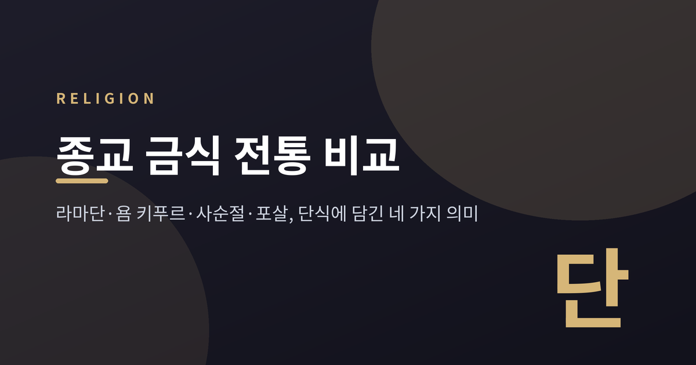
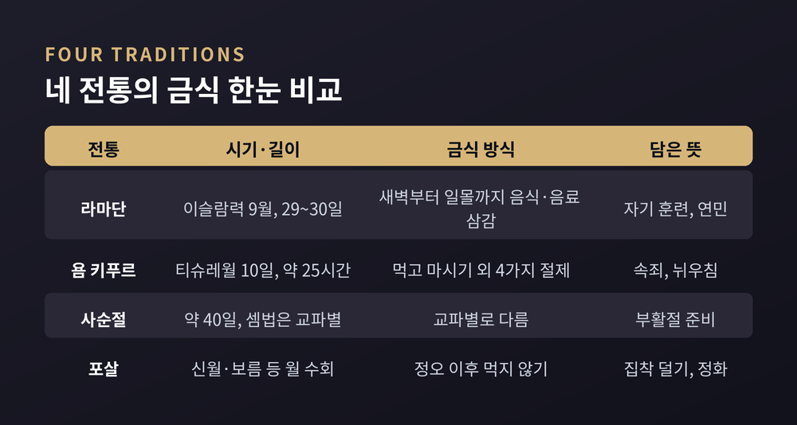
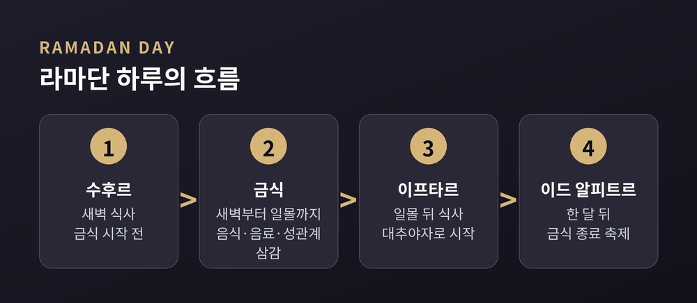
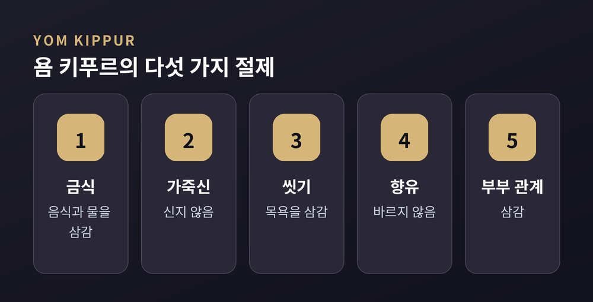
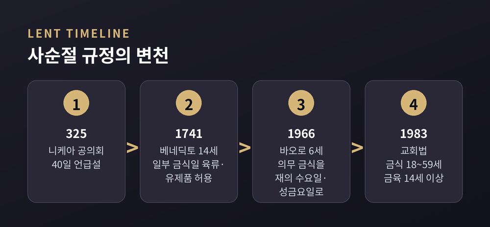
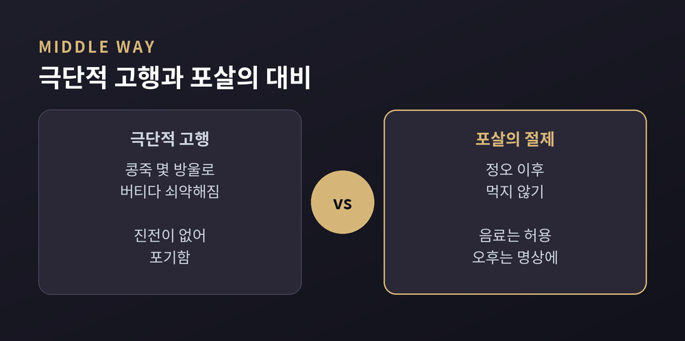

오늘은 종교의 금식 전통을 비교종교학의 눈으로 정리해 보려 합니다. 이슬람의 라마단, 유대교의 욤 키푸르, 기독교의 사순절, 불교의 포살을 나란히 놓고 같은 단식이 어떻게 다른 뜻을 얻었는지 살펴봅니다. 어느 전통이 옳은지를 가리는 글이 아니라, 각 전통이 스스로 설명하는 의미를 관찰하는 글입니다.

단식은 가장 오래되고 가장 단순한 종교적 행위 가운데 하나입니다. 브리태니커 백과사전은 금식을 건강, 의례, 종교, 윤리적 목적으로 음식이나 음료를 끊는 일이라고 정의합니다. 전면적일 수도 부분적일 수도 있고, 길 수도 짧을 수도 있다고 덧붙입니다.
같은 행위라도 목적은 다릅니다. 유대교 전통은 금식의 목적을 속죄, 추모, 간구, 감사의 기념으로 나누어 설명합니다. 이 글에서는 여기에 더해 네 가지 결을 구분해 읽겠습니다. 자기 훈련, 속죄, 준비, 정화입니다. 다만 이 분류는 사례를 읽기 위해 필자가 세운 틀이며, 학계의 공식 분류는 아닙니다.

라마단은 이슬람력 아홉 번째 달이며 금식의 성월로 불립니다. 초승달이 보이면 시작되고 금식 종료 축제인 이드 알피트르로 끝납니다. 이슬람 전승은 예언자 무함마드가 첫 쿠란 계시를 받은 달로 기억합니다.
규칙은 분명합니다. 사춘기에 이른 무슬림은 새벽부터 일몰까지 음식과 음료, 성관계를 삼갑니다. 죄가 되는 말과 행동을 멀리하는 것도 금식에 포함됩니다. 새벽 식사는 수후르, 해 질 녘 식사는 이프타르라고 하며, 이프타르는 대추야자로 시작하는 것이 전통입니다.
쿠란 2장 183절은 금식이 이전 사람들에게 규정된 것처럼 너희에게도 규정되었다고 말하고, 그 목적을 타크와, 곧 하느님을 의식하는 경건함으로 풀이합니다. 2장 185절은 병들거나 여행 중인 사람은 나중에 같은 날수를 채우라고 하면서 "하느님은 너희에게 쉬움을 원하고 어려움을 원치 않는다"고 밝힙니다. 엄격함 곁에 배려가 함께 적혀 있는 셈입니다.
그래서 면제 규정이 넓습니다. 급성·만성 질환자, 여행자, 노인, 임신부와 수유부, 월경 중인 여성은 금식하지 않고 나중에 보충합니다. 보충이 어려운 경우에는 가난한 이에게 식사를 제공하는 피드야로 대신하기도 합니다. 이슬람 전통은 자제력과 경건함에 더해 가난한 이의 배고픔을 몸으로 이해하는 일을 금식의 의미로 설명하고, 라마단 중의 자선을 특별히 값진 예배로 꼽습니다.
한 가지 흥미로운 점은 달력입니다. 이슬람력은 태음력이어서 1년이 태양년보다 10~11일 짧고 윤달도 두지 않습니다. 그래서 라마단은 해마다 앞당겨지며 여름과 겨울을 오갑니다. 금식 시간도 그에 따라 달라집니다. 대부분의 무슬림은 11~16시간을 금식하지만, 2014년에는 레이캬비크와 트론헤임에서 거의 22시간, 시드니에서 약 11시간이었다고 합니다.

실천율도 눈여겨볼 만합니다. 퓨리서치센터가 39개국·지역의 무슬림 3만 8천 명 이상을 조사한 결과 라마단 금식 비율의 중앙값은 93%였습니다. 인도네시아와 말레이시아는 99%, 파키스탄은 97%인 반면 러시아는 56%, 알바니아는 44%, 카자흐스탄은 30%였습니다. 같은 전통 안에서도 지역과 사회적 환경에 따라 실천 정도가 크게 갈린다는 뜻입니다.
욤 키푸르는 유대력 티슈레월 10일, 대개 9월이나 10월에 찾아오는 속죄일입니다. 새해 로쉬 하샤나에서 시작되는 회개의 열흘을 마무리하는 날로, 유대 절기 중 가장 엄숙하고 거룩한 날로 꼽힙니다. 위키피디아의 유대교 금식 항목에 따르면 토라가 유일하게 금식일로 명시한 날이기도 합니다.
레위기 16장은 일곱째 달 열흘째 날에 스스로를 낮추고 일하지 말라고 말하며, 그날 속죄가 이루어져 모든 죄에서 정결해진다고 밝힙니다. 영어 번역에서 흔히 자신을 괴롭히라는 뜻으로 옮겨진 이 표현을, 랍비 전통은 미슈나 요마 8장 1절에서 다섯 가지 절제로 풀었습니다. 먹고 마시기, 가죽신 신기, 씻기, 향유 바르기, 부부 관계를 삼가는 것입니다.
금식은 일몰에 시작해 다음 날 밤이 올 때까지 이어져 약 25시간이 됩니다. 일몰 시점이 분명치 않을 수 있어 앞뒤로 몇 분을 더하는 관행이 생겼다는 설명이 있습니다. 하루는 다섯 번의 예배로 채워집니다. 저녁 예배 앞에서는 개인의 서원과 맹세를 무효로 선언하는 콜 니드레를 낭송하고, 마지막 예배 네일라가 쇼파르 소리로 끝나면 금식도 풀립니다. 이후에는 가족과 친구가 모여 식사를 나눕니다.

흥미로운 것은 유대 전통이 금식 자체를 속죄의 열쇠로 보지 않는다는 점입니다. 금식 항목의 설명에 따르면 핵심은 잘못에 대한 진심 어린 뉘우침과 바로잡음이고, 금식은 그런 뉘우침을 거드는 수단입니다. 사람에게 잘못한 일은 먼저 그 사람에게 용서를 구해야 한다는 관념도 이어집니다. 이날의 하프타라 낭독인 이사야서 58장은 이 점을 더 분명히 합니다. "이것이 내가 택한 금식이냐"라고 묻고, 악의 결박을 풀고 압제당하는 이를 놓아주며 굶주린 이에게 양식을 나누는 것이 택한 금식이라고 답합니다.
면제도 있습니다. 전통에서는 13세 미만 아동은 금식 의무가 없고, 건강이 위태로운 사람은 금식하지 않으며 위험할 때는 오히려 금식을 깨야 합니다. 2019년 이스라엘 유대인의 60.5%가 욤 키푸르에 금식할 계획이라고 답했다는 조사도 있으니, 모든 이가 같은 방식으로 지키는 것은 아닙니다. 물만 마시거나 부분적으로 금식하는 사람, 하루치 식비를 푸드뱅크에 기부하는 사람도 있다고 합니다.
사순절은 기독교의 부활절을 앞둔 참회와 준비의 기간입니다. 약 40일이라는 길이는 예수의 광야 금식(마태복음 4장), 그리고 모세와 엘리야의 금식과 연결됩니다. 서방 교회에서는 재의 수요일에 시작하며, 금식과 기도와 구제가 세 기둥으로 꼽힙니다.
의외로 날수 계산은 교파마다 다릅니다. 개신교와 서방 계통에서는 재의 수요일부터 성토요일까지 46일이지만 일요일 6일을 빼면 40일입니다. 로마 예식은 성목요일 저녁까지를 44일로 세고 금식은 성금요일과 성토요일까지 이어져 40일을 채웁니다. 비잔틴 예식은 일요일을 포함해 깨끗한 월요일부터 48일을 세고, 에티오피아 정교회는 40일의 초무 아르바를 포함해 55일에 이르는 금식 기간을 둡니다. 40이라는 숫자는 같지만 세는 방법은 이렇게 다양합니다.
역사도 단선적이지 않습니다. 325년 니케아 공의회에서 40일이 언급되었다는 설이 있고, 339년 아타나시우스는 40일 금식이 온 세상에서 지켜진다고 적었습니다. 6세기 이전에는 해 진 뒤 채식 한 끼만 허용하는 이른바 검은 금식이 표준 형태였다고 전해집니다. 예전엔 엄격한 하루 한 끼가 기준이었다면, 지금은 교파와 지역에 따라 훨씬 유연해졌습니다. 1966년 바오로 6세가 교령 파이니텐미니를 내려 가톨릭의 의무 금식을 재의 수요일과 성금요일로 줄였습니다.

오늘날 가톨릭 교회법 1252조는 금식을 성년부터 60세 시작 전까지, 금육을 만 14세 이상으로 정합니다. 금식일에는 한 끼의 충분한 식사와 합쳐도 한 끼에 미치지 않는 두 번의 소량 식사를 허용하는 방식이 널리 소개됩니다. 1253조는 주교회의가 금식을 자선이나 신심 행위로 대체할 수 있다고도 밝힙니다. 동방 정교회는 대사순절 40일과 성주간에 육류, 생선, 달걀, 유제품 등을 제한하며, 수요일과 금요일 상시 금식도 지킵니다. 개혁교회는 역사적으로 사순절을 지키지 않았고 칼뱅은 이를 미신적 관습이라고 불렀지만, 오늘날에는 지키는 교회도 있습니다.
금식의 뜻에 대한 설명도 갈립니다. 동방 정교 신학은 금식이 폭식과 불순한 생각을 막고 기도와 구제와 함께할 때 의미가 있다고 보며, 몸을 영혼의 적이 아닌 동반자로 봅니다. 루터는 금식이 육신의 교만과 정욕을 누르는 일이라고 했고, 칼뱅은 개인의 금식이 겸손과 고백을 돕는다고 했습니다. 마태복음 6장은 금식할 때 슬픈 기색을 드러내지 말고 은밀히 하라고 권합니다. 보여 주는 금식에 대한 경계는 이사야서 58장과 닮아 있습니다.
포살, 곧 우포사타는 부처님 시대부터 이어진 날로, 부처님은 이를 물든 마음을 씻는 날로 가르쳤다고 전해집니다. 상좌부 불교 국가에서는 대체로 신월, 보름, 상현, 하현에 해당하는 날을 지키며, 승가에서는 이날 계율을 모은 파티목카를 암송하고 잘못을 고백합니다. 대승 전통의 중국에서는 한 달 열흘 혹은 엿새를 재일로 정하고, 일본에서는 이를 십재일, 육재일이라 부릅니다.
재가 신자는 이날 팔재계를 지킵니다. 다섯 계율에 더해 불음행이 성적 잘못이 아닌 완전한 금욕으로 강화되고, 여섯째로 때 아닌 때 먹지 않기, 곧 정오 이후 음식을 먹지 않는 규칙이 붙습니다. 음료는 허용됩니다. 일곱째는 오락과 장신구와 향수를, 여덟째는 호사스러운 자리와 침대를 멀리하는 것입니다. 태국과 중국에서는 신자들이 사찰에서 하룻밤을 보내는 경우가 많다고 합니다.

불교의 금식은 다른 세 전통과 결이 다릅니다. 싯다르타는 깨달음 이전에 극단적 고행으로 콩죽 몇 방울에 의존하며 쇠약해졌으나 진전이 없어 중도를 택했다고 전해집니다. 또한 금식으로 업을 태운다는 자이나 고행자들의 견해를 비판한 대목도 있습니다. 위키피디아의 불교 금식 항목은 정오 이후 불식을 굶기보다 절제된 식사로 설명합니다. 오후는 명상과 독경에 쓰고, 그 목적은 집착을 덜고 마음을 가볍게 하는 데 있다는 것입니다.
팔재계가 도덕보다 명상의 집중을 돕고 방해를 막는 쪽에 무게를 둔다는 설명도 같은 맥락입니다. 동아시아에서는 엄격한 채식과 오신채를 멀리하는 재가 널리 퍼졌고, 태국 숲속 수행승은 하루 한 끼와 탁발로 얻은 음식만 먹는 두타행을 합니다. 다만 상좌부 전통에서 팔재계를 지키는 이는 주로 40세 이상 신자라는 서술도 있어, 모든 신자가 하는 일상 관행은 아닙니다.
네 전통을 나란히 놓으면 차이가 먼저 눈에 띕니다. 라마단은 공동체가 한 달간 함께 지키는 리듬이고, 욤 키푸르는 하루에 응축된 속죄이며, 사순절은 교파마다 계산과 강도가 다른 준비의 시간이고, 포살은 몸의 욕구를 줄여 마음을 가라앉히는 반복적인 훈련입니다. 달력도 태음력, 유대력, 부활절 기준, 달의 위상으로 제각각입니다.
그런데 공통점도 뚜렷합니다. 첫째, 어느 전통이든 예외를 둡니다. 이슬람은 병자와 여행자, 유대교는 건강이 위태로운 사람, 가톨릭은 연령 제한과 대체 실천을 허용합니다. 둘째, 금식이 곧 목적은 아니라고 경계합니다. 이사야서와 마태복음은 보여 주기식 금식을, 부처님은 극단적 고행을 경계했고, 이슬람 전통은 끊임없이 금식하는 이에게 보상이 없다는 하디스를 전합니다. 셋째, 금식을 이웃과 연결합니다. 라마단의 자선, 이사야서의 나눔, 사순절의 구제가 그 예입니다.
한계도 인정해야 합니다. 이 글은 영어권 백과사전과 위키피디아, 교회법 원문, 퓨리서치 조사를 바탕으로 한 개괄이어서 각 전통 안의 학파와 지역 관습의 차이를 모두 담지는 못했습니다. 건강에 미치는 효과 역시 연구 결과가 엇갈려 여기서는 다루지 않았습니다. 실제 금식을 고려하신다면 건강 상태를 먼저 살피고 신뢰할 수 있는 안내를 따르시길 권합니다.
정리하면 이렇습니다. 네 전통이 비워 낸 것은 음식만이 아니었습니다. 자기 훈련, 속죄, 준비, 정화라는 서로 다른 이름 아래에서 사람들은 비어 있는 자리에 이웃과 뉘우침과 고요를 채우려 했습니다.
"굶는 일은 수단이었고, 채우려던 것은 다른 곳에 있었다."
내가 끊어 본 것이 무엇이었는지, 그 자리에 무엇이 들어왔는지 한 번쯤 돌아보시길 권합니다. 답은 전통마다 다르겠지만 질문은 놀랍도록 닮아 있습니다.